구명조끼를 입으면 왜 몸이 뜰까?
물속에 들어가면 몸이 가벼워지고, 구명조끼를 입으면 몸이 둥실 떠요. 액체나 기체가 물체를 위로 밀어 올리는 힘, 부력에 대해 알아봐요.
지난 시간에 배운 마찰력, 기억나나요?
학습 목표
교과서 170~173쪽물속에서 몸이 뜰 수 있는 까닭은?
교과서 170쪽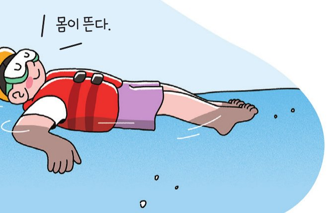
구명조끼를 입고 물속에 들어가면 몸이 뜬다. 이것은 물속에 있는 몸에 힘이 작용하기 때문이다. 물속에서 몸이 뜰 수 있는 까닭은 무엇일까?
물속에서 물체가 어떤 힘을 받는지 알아보자.
물속에서 받는 힘 알아보기
교과서 170쪽🎯 물속에서 물체에 작용하는 힘의 방향을 설명할 수 있다.
🧰 준비물: 빈 페트병, 수조, 물, 실험복, 실험용 장갑
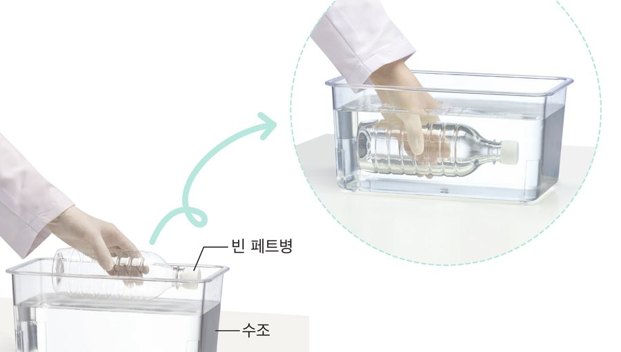
- 1물을 채운 수조에 빈 페트병을 놓고 서서히 눌러서 잠기게 하자.
- 2빈 페트병을 잡은 손에 어떤 느낌이 드는지 느껴 보자.
🖐️ 가상 활동: 페트병을 눌러 보자
페트병을 아래로 끌어내리거나 슬라이더를 움직여 물에 잠기게 해 보자.
📝 활동 후 설명해 보기
- 1빈 페트병을 잡은 손에 어떤 느낌이 드는가? 그렇게 생각한 까닭은 무엇인지 설명해 보자.페트병을 눌러서 물에 잠기게 할 때 손에는 위쪽으로 밀어 올리는 힘이 느껴진다. 이때 페트병이 물속에 많이 잠길수록 위쪽으로 밀어 올리는 힘은 커진다.
부력과 부력의 방향
교과서 171쪽빈 페트병을 물속으로 밀어 넣으려고 하면 병이 물에 잠기는 것을 방해하는 힘을 느낄 수 있다. 이것은 페트병에 위쪽으로 밀어 올리는 힘이 작용하기 때문이다. 이러한 힘은 물과 같은 액체 속에서만 작용하는 것이 아니라 공기와 같은 기체 속에서도 작용한다.
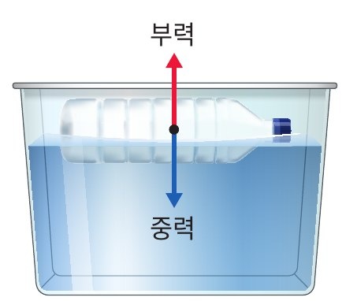
헬륨을 채운 풍선이 하늘로 올라가는 것은 풍선에 위쪽으로 부력이 작용하기 때문이다.
부력의 이용
교과서 171쪽그림 Ⅴ-13과 같이 우리 주변 곳곳에서 부력을 이용하고 있다. 어떤 물질(액체·기체)의 부력을 이용하는지 생각해 본 뒤 설명을 열어 보자.
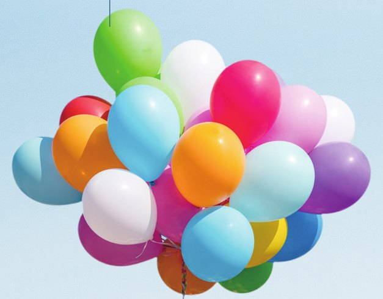
🎈 헬륨 풍선
헬륨을 채운 풍선이 공기의 부력을 받아 위로 올라간다.
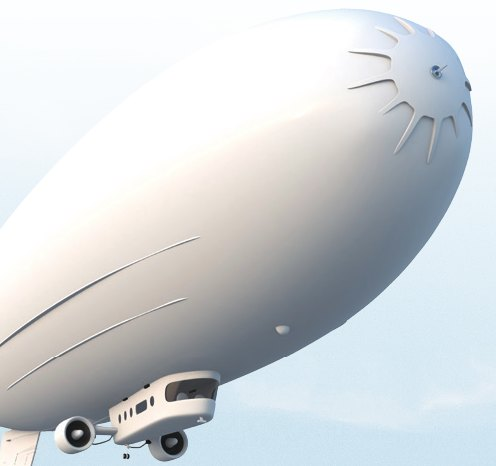
🛸 비행선
헬륨을 채운 비행선이 공기의 부력을 받아 위로 올라간다.
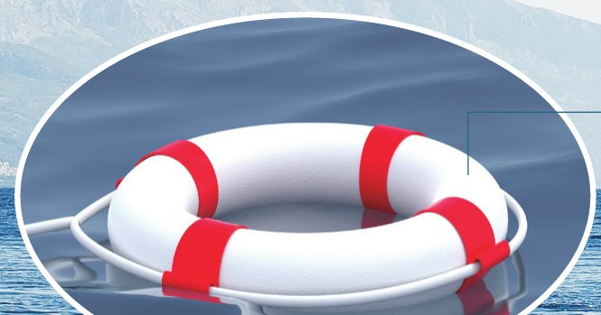
🛟 튜브
튜브를 이용하면 물의 부력 때문에 더 쉽게 물에 뜰 수 있다.
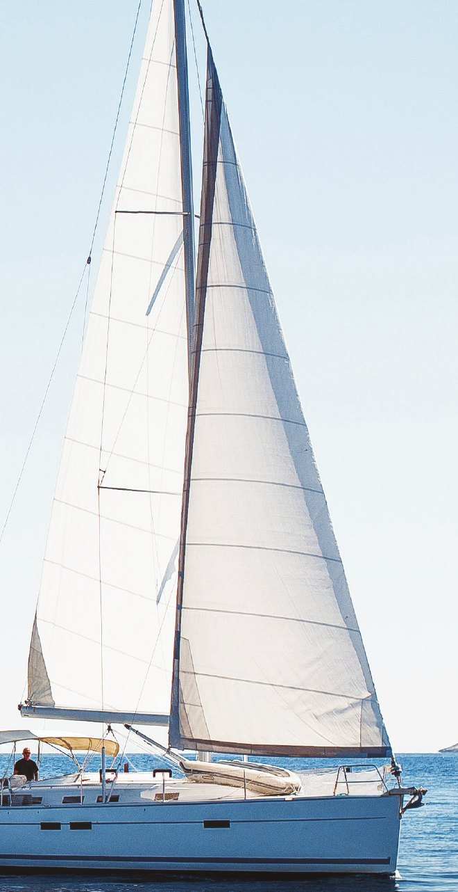
⛵ 배
배는 물의 부력을 받아 물에 뜬다.
💧 액체의 부력을 이용한 예
- 부표: 물의 부력을 이용해 물 위에 띄워 배가 안전한 항해를 하게 한다.
- 구명조끼: 물의 부력을 이용해 위급한 상황에서 생명을 구할 수 있다.
☁️ 기체의 부력을 이용한 예
- 열기구: 공기의 부력을 이용해 위로 떠올라 관광용으로 이용한다.
- 헬륨을 넣은 비행선: 공기의 부력을 이용해 위로 떠올라 기상 관측 기구로 이용한다.
물속에서 부력 측정하기
교과서 172쪽부력의 크기는 어떻게 측정할 수 있을까? 힘 센서를 사용해 물속에 있는 물체에 작용하는 부력의 크기를 측정해 보자.
🎯 목표 | 부력이 작용하는 방향을 알고, 부력의 크기에 영향을 주는 요인을 설명할 수 있다.
🧰 준비물: 힘 센서, 스마트 기기, 추, 물, 비커, 스탠드, 고정 막대, 집게 잡이, 실험복, 보안경, 실험용 장갑
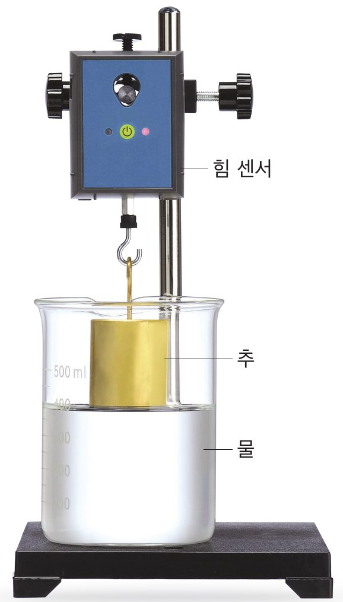
- 1힘 센서를 스마트 기기의 프로그램과 연결한다.
- 2스탠드에 힘 센서와 추를 매달고 (가)와 같이 추가 물에 잠기기 전 힘 센서로 측정한 값을 기록해 보자.
- 3(나), (다)와 같이 추가 물에 절반 정도 잠겼을 때와 추가 물에 완전히 잠겼을 때 각각 힘 센서로 측정한 값을 기록해 보자.
- 4(나), (다)에서 (가)에 비해 감소한 값을 구하여 기록해 보자.
🖐️ 가상 실험: 추를 물에 넣어 보자
(가)~(다) 버튼으로 추의 위치를 바꾸고 「측정값 기록」을 눌러 표를 채워 보자. 그다음 감소한 값을 직접 계산해 써 보자.
| 구분 | (가) 추가 물에 잠기기 전 | (나) 추가 물에 절반 정도 잠겼을 때 | (다) 추가 물에 완전히 잠겼을 때 |
|---|---|---|---|
| 측정 모습 | 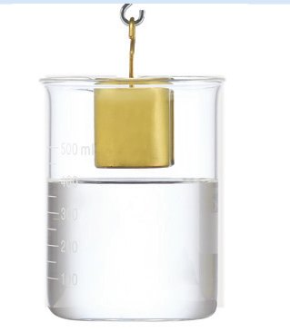 | 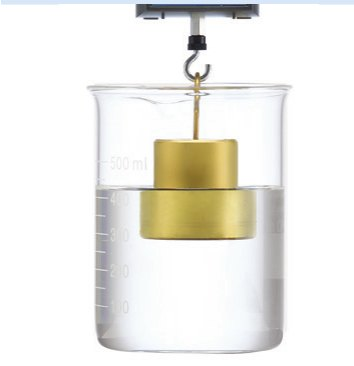 | 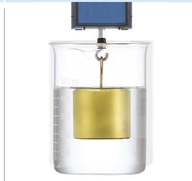 |
| 측정값(N) | ? | ? | ? |
| 감소한 값(N) | N | N |
📝 정리
- 1(나), (다)에서 측정값이 (가)에 비해 감소한 까닭은 무엇인가?힘 센서의 측정값은 중력(추의 무게)에서 부력의 크기를 뺀 값과 같다. (가)~(다)에서 중력의 크기는 일정하지만 추가 물에 더 많이 잠길수록 부력의 크기가 증가하기 때문에 (나), (다)에서 측정한 값이 (가)에 비해 감소한다.
- 2(나), (다)에서 추에 작용하는 부력의 크기는 각각 얼마인가?(나)에서 추에 작용하는 부력의 크기는 0.30 N이고, (다)에서 추에 작용하는 부력의 크기는 0.60 N이다.
- 3물에 잠긴 추의 부피와 부력의 크기는 어떤 관계인지 설명해 보자.물속에 잠긴 추의 부피가 클수록 부력이 크다.
부력의 크기
교과서 173쪽추가 물에 잠기기 전 힘 센서로 측정한 값은 추의 무게이다. 추가 물에 잠기면 힘 센서로 측정한 값이 감소하는데, 이것은 추에 부력이 작용하기 때문이다.
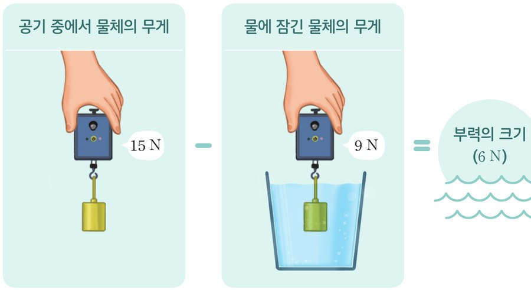
그림 Ⅴ-15와 같이 배에 짐을 많이 실어 무게가 증가하면 배의 아랫부분이 물에 더 잠긴다. 이에 따라 물에 잠긴 배의 부피가 커지므로 부력의 크기도 커진다.
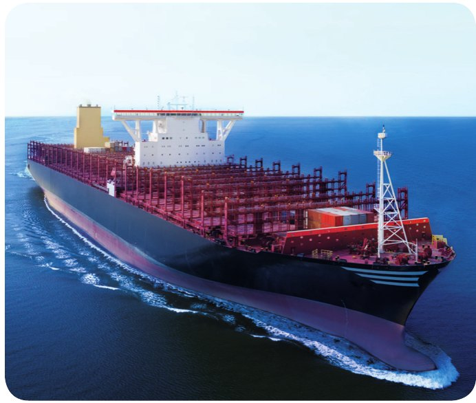
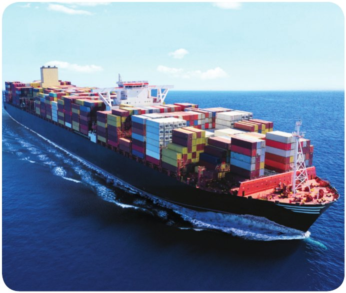
그림 Ⅴ-15 배에 작용하는 부력 | 짐을 실은 배는 짐을 싣지 않은 배보다 부력이 더 크게 작용한다.
배운 내용, 확인해 볼까요?
교과서 173쪽부력의 방향은 중력의 방향과 반대이다.
조금 더 풀어볼까요?
부력 연습 문제부력은 물과 같은 액체 속에서만 작용한다.